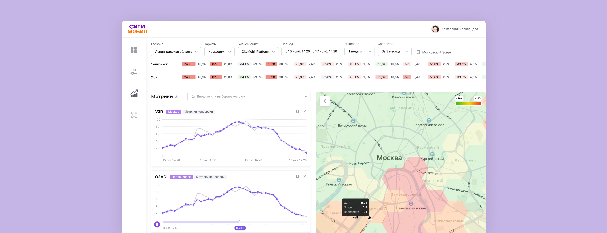
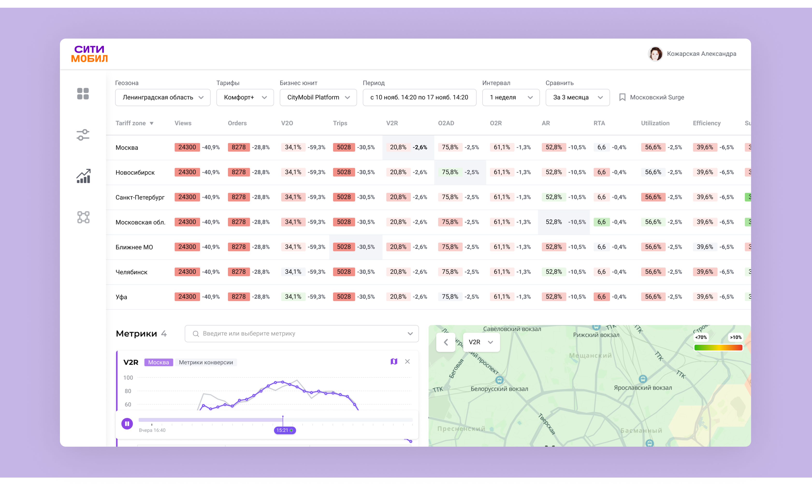
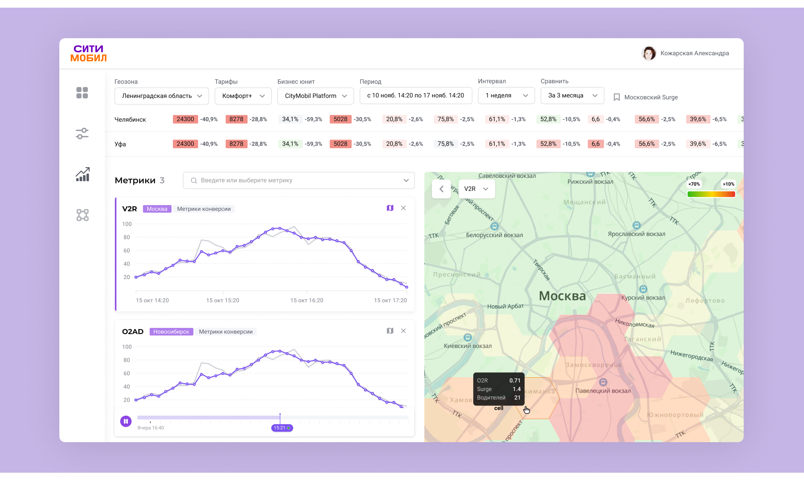
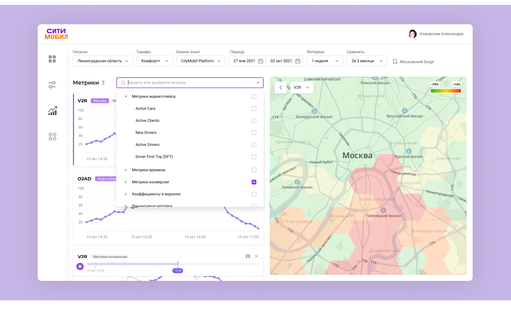
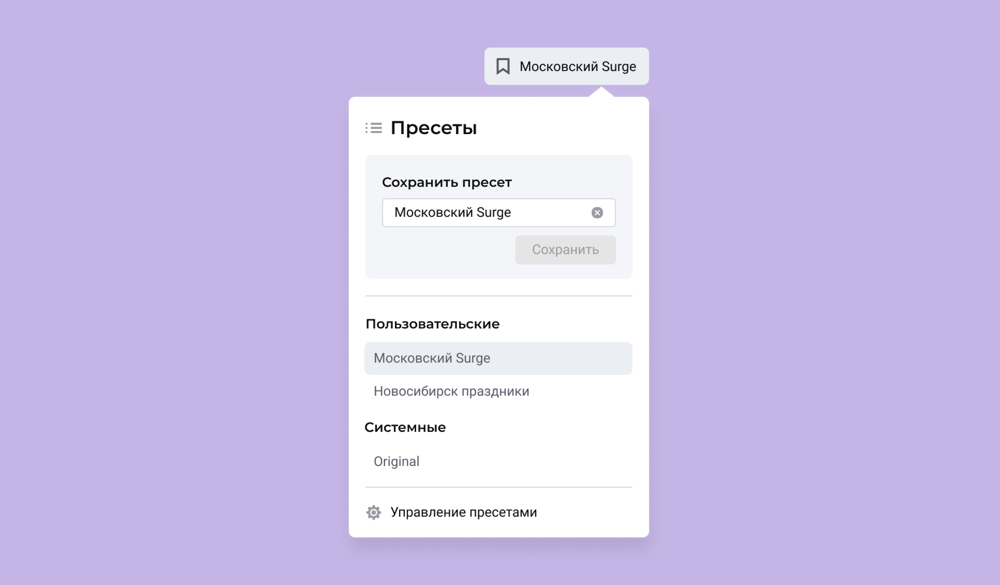

Geoanalytics Геоаналитика
At Citymobil I designed the Geoanalytics module inside Atlas — an analytics system that helps managers understand overall city conditions and choose mechanics to shift supply/demand balance.
В Ситимобил я работала над интерфейсом Геоаналитики — раздела продукта Атлас. Атлас — аналитическая система, которая помогает менеджерам оценить общее состояние города и выбрать механики для изменения баланса спроса и предложения.

The Problem
Operating managers needed to assess city conditions over a period (a week, a month, several months) to see whether promotions worked, spot trends, and plan long-term strategy.
Before Geoanalytics they used several sources at once: metrics tables in Tableau, and a separate service with heat maps per metric. On any filter change the map service reloaded slowly. To build a report managers took screenshots from both and compared them by hand. It was slow and painful.
Операционным менеджерам нужно было оценивать ситуацию в городе за период (неделя, месяц, несколько месяцев) — понять, сработали ли акции, увидеть тенденции, принять долгосрочную стратегию исправления дисбаланса.
До Геоаналитики менеджеры пользовались сразу несколькими источниками: таблицы с метриками в Tableau, отдельный сервис с тепловыми картами по каждой метрике. При малейшем изменении фильтров карта долго грузилась. Чтобы сделать отчёт, менеджеры делали скриншоты из обоих сервисов и сопоставляли между собой — это было неудобно и отнимало много времени.
The Process
We needed a single service that combined supply and demand data across all business metrics, and let managers view metrics both as tables and on a map when applicable. This would let them react to supply/demand shifts faster and use their promotion budgets more effectively.
Нужен был сервис, который объединял бы информацию о спросе и предложении на основе всех известных бизнес-показателей и давал возможность смотреть метрики и в таблице, и на карте — когда это возможно для выбранного типа метрик. Это позволило бы оперативнее реагировать на изменения спроса/предложения и эффективнее распоряжаться миллионами рублей, которые менеджеры тратили на промо.
The Solution
By default the manager sees a table of all metrics across cities in the selected region. On the right, week-over-week changes are shown in %, so managers can quickly see how each metric shifted from the previous week.

After clicking on chosen metrics in the table, their card view and a map appear.

Managers can click into a region on the map to see metrics for just that slice.

Metrics can be added not only from the table, but from search sorted by category.

We also added presets — system presets, or ones managers can create themselves.

Изначально менеджер видит таблицу со всеми метриками по городам в выбранной области. Справа в процентах показывается week-over-week — чтобы менеджер мог сразу понять, как изменилась метрика по сравнению с прошлой неделей.
После клика на нужные метрики в таблице появляется их карточное представление и карта.
На карте можно кликнуть в нужную область и посмотреть метрики именно для этого кусочка.
Метрики можно добавлять не только из таблицы, но и из поиска, где они отсортированы по категориям.
Добавили возможность использовать пресеты — системные, либо создавать свои.